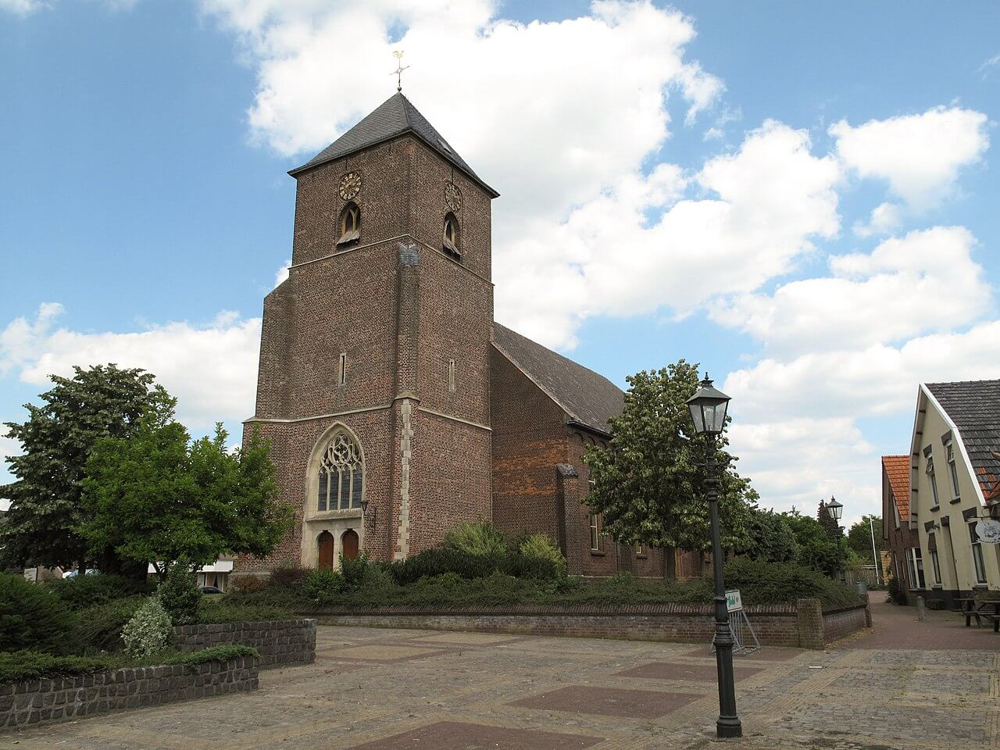
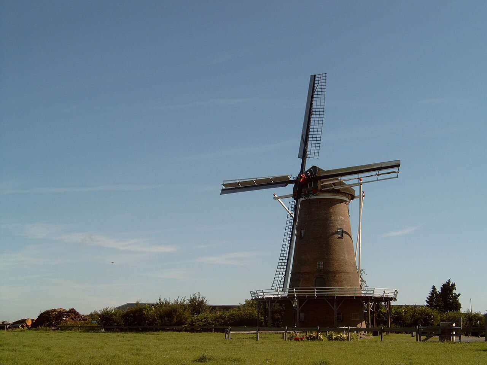

Needse Kerk
De Sint-Caeciliakerk is een rooms-katholieke kerk in de Nederlandse plaats Neede. De kerk is ontworpen door Johannes Sluijmer en is in de jaren 1949 - 1950 gebouwd. De kerk is in 1950 ingewijd, later dat jaar geconsacreerd door Johannes Olav Smit en kreeg als beschermheilige de martelares Cecilia. Katholieken waren voordien gewezen op een kleinere kerk die tijdens de Tweede Wereldoorlog flink beschadigd was.

Needse Molen
Net buiten Neede in de buurtschap Lochuizen staat De Hollandsche Molen. De molen zoals die er nu staat, is in gebruik genomen in januari 1927, nadat de standaardmolen die er stond op 10 augustus 1925 verwoest werd door de cycloon die ook Borculo zwaar heeft getroffen. De vereniging De Hollandsche Molen heeft, in samenwerking met het Nationaal Steuncomité "Stormramp", de bouw van de nieuwe molen verzorgd. De nieuwe molen is vernoemd naar de vereniging die de bouw mogelijk heeft gemaakt.